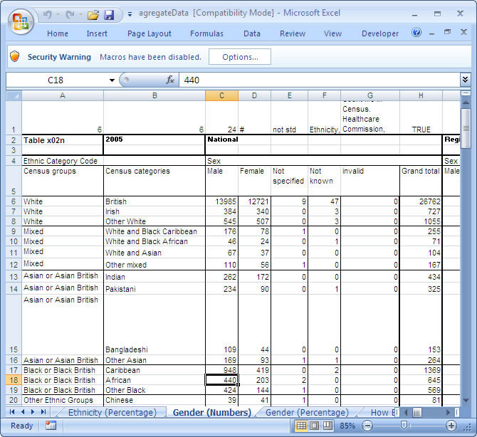

The spreadsheet is laid out almost identically to the National Count Me In Data for England and Wales 2008. The main difference is that some sheets have been deleted (are not present), because the regional and local data is not available. Each sheet has been altered to accommodate data from previous years 2005-2007 on a national, regional and local levels.
A block of 30 rows has been assigned for each year but the actual data starts from a location correspondent to B1 (the start of data row) for example if B1 is 6 then
- the 2005 data starts at row 6
- the 2006 data starts at row 30+6=36
- the 2007 data starts at row 30*2 +6=66 and so on
The figure below shows the layout of the spreadsheet with 6 fields

Figure 1
